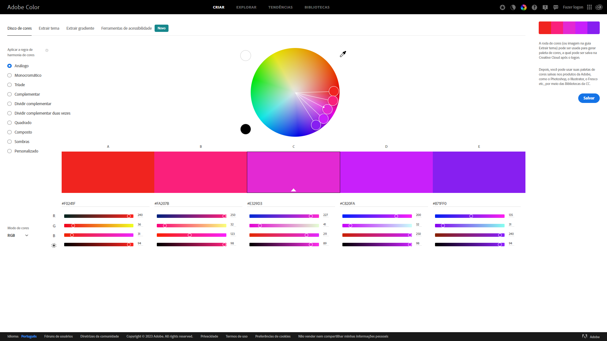

Sites para escolher paletas
- Adobe Colors
Site da Adobe com diversas formas de criar uma paleta nova

Formas de representação
Por nomes (blue)
Hexadecimal (#af1ab1)
RGB (Red, Green, Blue) rgb(221, 71, 34)
HSL (Hue, Saturation, Luminosity) hsl(65, 100%, 62%)
hwb(113 13% 18%)
Obs.: também é posível determinar a opacidade (nível de transparência) em CSS3
Gradientes
Linear-gradient
background-image: linear-gradient(to right, #691E8F, #ff0020);
Radial-gradient
background-image: radial-gradient(#691E8F, #ff0020);